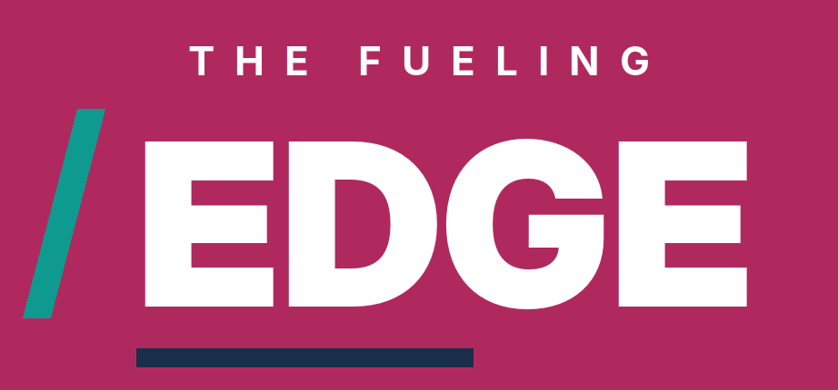

Food has one job: show up as energy at whistle time. Pick the kind of day and the app does the clock.
Then it opens like an app, full screen, and it works at the field with one bar of signal.
Michelle Marie · CISSN Certified Sports Nutritionist · 25 years training athletes · mom of 2 competitive athletes